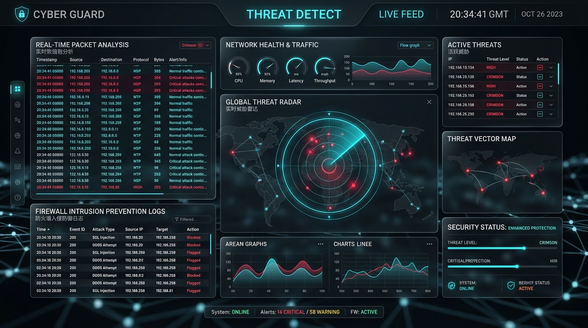

Cybersecurity / IDS
BSCS Final Year Project & Active Security System
Real-Time Network Monitoring & Active Intrusion Prevention (IDPS)
Engineered an end-to-end network intrusion detection and prevention engine capable of live raw socket packet sniffing, protocol parsing, and instantaneous automated threat mitigation.
- Low-level packet capture via Python (Scapy / Raw Sockets) with deep protocol dissection.
- Integrated dynamic iptables IPS mechanism that automatically blocks attacker IPs upon detecting anomalous payloads.
- High-performance web UI dashboard for real-time packet telemetry, incident response, and live log automation.
Python
Scapy
Linux iptables
Flask / React
Log Automation